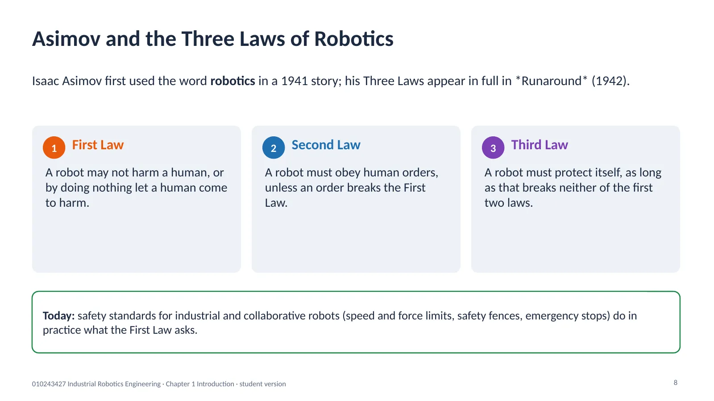

Chapter 1 opens with a simple question that is hard to answer: what turns a machine into a robot? This page covers slides pp. 4–9. It has one tool (A) that lets you switch sensing, thinking or acting off one at a time, and 2 problems that use three criteria to tell robots from machines.
A washing machine runs by itself, but only through the cycles its maker built in. The same industrial arm welds today and, with a new program, stacks boxes tomorrow. Being reprogrammable is the line between an automatic machine and a robot. Tool A below shows the other side: a robot has to close the loop of sensing, thinking and acting.
Each time the part is moved, the loop runs: sense (the blue cross is where the camera measures the part) → think (the faint purple arm is the computed joint angles) → act (the motors take the arm there and close the gripper).
ลองปิดทีละแกน
Switch the cores off one at a time
ปิด SENSE แล้วกด "วางชิ้นงานใหม่": แขนยังคิดและขยับได้ แต่ไปที่ ตำแหน่งเดิมที่จำไว้ ซึ่งไม่ใช่ที่ชิ้นงานอยู่
Switch SENSE off and press "Move the part": the arm still thinks and moves, but to the old position it remembers, not to where the part is.
Switch THINK off: the camera sees the part, but nothing turns its position into joint angles, so the arm stays still (that step is inverse kinematics, chapter 4).
Switch ACT off: the angles are right (the faint arm is on the part) but the motors do nothing.
กฎสามข้อของ Asimov (สไลด์หน้า 8)
Asimov's three laws (slide p. 8)

สไลด์หน้า 8 · แตะรูปเพื่อขยายSlide p. 8 · tap to enlarge
Isaac Asimov was the first to use the word robotics, in a 1941 story, and set out his three laws in full in "Runaround" (1942). The first law (do not harm a human) still shows in real work today: safety fences, emergency stops, and the speed and force limits of robots that work beside people (collaborative robots).
The same arm, different programs: choose a job and watch the arm go through that job's taught points. A single-purpose automatic machine could only ever do the first one.
ลองทำดู 1 — วงรอบต้องครบ
ในเครื่องมือ A ปิด SENSE แล้ววางชิ้นงานใหม่สองสามครั้ง: แขน ทำงานอย่างมั่นใจแต่ผิดที่ ซึ่งอันตรายกว่าแขนที่หยุดนิ่ง
เปิด SENSE กลับ: กล้องวัดตำแหน่งได้ไม่เป๊ะ 100% (กากบาทไม่ตรงกลางชิ้นงานพอดี) แต่ความคลาดเคลื่อนเล็กพอที่มือจับจะหนีบได้
In tool A switch SENSE off and move the part a few times: the arm moves confidently to the wrong place, which is more dangerous than an arm that stays still.
Switch SENSE back on: the camera is not perfect (the cross is not exactly on the centre of the part), but the error is small enough for the gripper.
Try this 2 — reprogrammable
In problem 2 switch between the jobs: the same arm and the same motors; only the list of taught points changes.
A washing machine cannot do this: its sequence is fixed when it is designed.
Source: chapter 1 slides, pp. 4–9 (the pictures are on this page) · Spong 1.1 · Craig 1.1